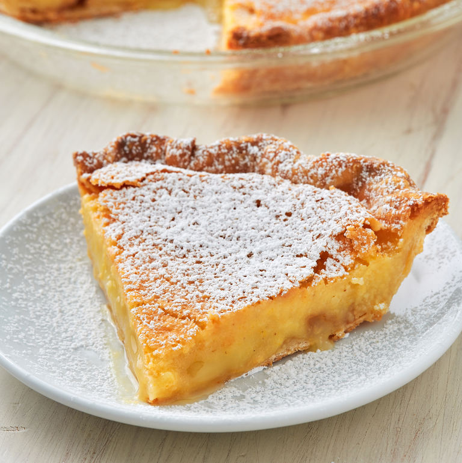

Chess Pie

Description
Chess Pie is very similar to the classic Buttermilk Pie. It's a simple custard pie
mostly made from eggs, sugar and butter (what's not to love!) and typically includes
a bit cornmeal for a ncie subtle texture. It's wonderful on its own, with a dusting
of powdered sugar, or served with fresh fruit.
Ingredients
- 1 pie crust
- 4 large eggs
- 1 1/2 c. granulated sugar
- 1/2 c.(1 stick) butter, melted and cooled slightly
- 1/4 c. milk
- 1 tablespoon white vinegar
- 2 tablespoons pure vanilla extract
- 1/4 c.cornmeal
- 1 tablespoon all purpose flour
- 1/2 tablespoon kosher salt
Steps
-
Preheat oven to 425°. Roll out pie crust and place in a 9" round pie dish. Trim
and crimp edges and poke bottom of crust all over with a fork. Place in freezer
to chill for 15 minutes.
-
Place parchment paper inside pie crust and fill with pie weights or dried beans.
Bake until golden about 15 minutes, then carefully remove parchment and pie
weights and bake 10 minutes more. Let cool while making pie filling.
-
Reduce oven temperature to 325°. In a large bowl whisk eggs and sugar together.
Add melted butter, milk, vinegar, and vanilla and whisk until incorporated. Add
cornmeal, flour and salt and whisk until combined.
-
Pour filling into pie crust and bake until just set in the middle, 50 minutes. Let
cool at room temperature, then place in refrigerator until ready to server, at least 4 hours.
-
Dust with powdered sugar before serving